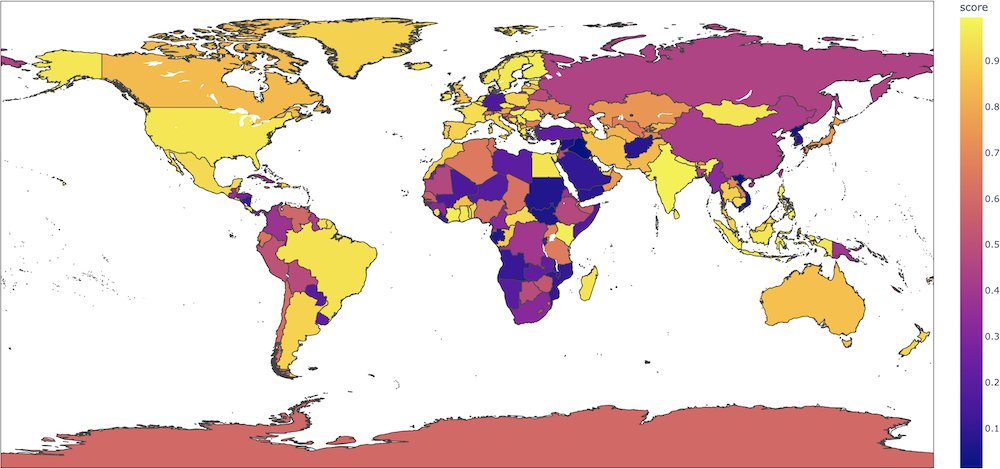

05 Hugging Face
영어 감성 분류 기본기, 정확도 91.3
apache-2.0 사내 사용 가능공개일 12.19
감성 분류는 가장 널리 쓰이는 텍스트 분류 과업이다. 짧은 문장 톤을 빠르게 나눌 때 특히 편하다. 이 모델은 영어 감성 분류의 기본 비교점으로 자주 쓰이는 카드다. 금융 특화 모델과 견줄 기준점으로도 쓸 수 있다.
무엇을 하는 모델인가
이 모델은 영어 문장의 감성을 분류한다. 카드 설명상 SST-2로 미세조정한 DistilBERT 체크포인트다. 분류 업무에 바로 붙여 쓸 수 있다. 라이선스는 Apache-2.0이다.

어떻게 불러 쓰나
import torch
from transformers import DistilBertTokenizer, DistilBertForSequenceClassification
tokenizer = DistilBertTokenizer.from_pretrained("distilbert-base-uncased-finetuned-sst-2-english")
model = DistilBertForSequenceClassification.from_pretrained("distilbert-base-uncased-finetuned-sst-2-english")
inputs = tokenizer("Hello, my dog is cute", return_tensors="pt")
with torch.no_grad():
logits = model(inputs).logits
predicted_class_id = logits.argmax().item()
model.config.id2label[predicted_class_id]원문: https://huggingface.co/distilbert/distilbert-base-uncased-finetuned-sst-2-english
돌리는 데 필요한 것
| 라이브러리 | transformers |
|---|---|
| 파이프라인 | text-classification |
| 파라미터 | 카드·API에 없음 |
| 제공 형식 | ONNX |
| 지원 언어 | English |
라이선스와 사내 반입
- 라이선스
- apache-2.0 사내 사용 가능
- 상업 이용
- 상업 이용에 제약 없음
- 접근 승인
- 필요 없음
- 재배포·파생
- 제한 없음
자동 분류이며 법무 판단을 대신하지 않습니다.
성능과 한계
정확도 91.3은 카드가 직접 밝힌 자체 측정 값이다. 비교 대상으로 같은 문단에서 bert-base-uncased 92.7을 제시했다. 카드에는 국가명만 바꿔도 긍정 확률이 크게 달라지는 편향 사례를 함께 적었다.
| 평가 이름 | 무엇을 재나 | 점수 | 측정 주체 | 비교 대상 |
|---|---|---|---|---|
| SST-2 dev set | 영어 감성 분류 정확도 | 91.3 | 카드 자체 기재 | bert-base-uncased 92.7 |
언제 이것을 고르나
영어 감성 분류를 빨리 시험하려면 이 모델이 가장 단순하다. 금융 문장으로 바로 들어가려면 ProsusAI/finbert가 과업에는 더 가깝다. 라이선스가 분명하고 예제가 있어야 하면 이 모델이 FinBERT보다 수월하다. 소셜 글 감성처럼 트윗 문체가 중요하면 cardiffnlp/twitter-roberta-base-sentiment-latest가 더 맞다.
주요 용어
원문 정보
제목: distilbert/distilbert-base-uncased-finetuned-sst-2-english
공개일: 2023.12.19
출처 URL: https://huggingface.co/distilbert/distilbert-base-uncased-finetuned-sst-2-english